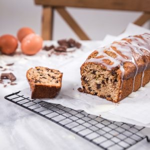

La recette du banana bread (cake à la banane)

Aujourd’hui, histoire de commencer le week-end tout en douceur, je vous retrouve avec une recette de banana bread aux pépites de chocolat ♥.
La banana bread (ou cake à la banane en français) c’est un peu notre gâteau chouchou que l’on aime bien faire sur un coup de tête quand on a des bananes un peu trop mûres qui trainent et qu’on a envie de se faire un petit plaisir de dernière minute! Cette recette peut se décliner en plein de versions différentes et on adore ça 🙂 Sur le blog je vous avez déjà donné la recette du banana bread au chocolat mais aujourd’hui j’ai décidé de partager avec vous la version de Marc Grossman qui est une version avec des pépites de chocolat et de la farine de sarrasin (et cette recette est vraiment vraiment parfaite pour un cake de dernière minute croyez-moi!). Bref, cette recette a eu un tel succès que ce soit à la maison ou auprès des collègues de mon chéri que j’étais obligée de venir partager la recette avec vous. Si vous voulez éviter d’avoir les pépites de chocolat qui coulent dans la pâte à cake pendant la cuisson et qui tapissent le fond du cake sans jamais se répartir uniformément dans le cake, pensez à bien les mélanger à la farine et elles tiendront comme par magie (c’est tout bête mais ça marche à chaque fois)!! Pour le glaçage, comme je l’explique plus bas, vous pouvez faire sans ou faire un glaçage royal classique ou encore faire fondre du chocolat noir (ou du chocolat au lait) au bain marie (c’est mon préféré!) Pour cette fois-ci j’ai utilisé le même glaçage que celui que j’utilise sur mes cinnamon rolls car c’est le préféré de Mr avec du cream cheese (philadelphia, St Moret etc) et du sucre glace. Pour vous montrez tout ça j’ai pris le temps de faire une petite vidéo, j’espère qu’elle vous plaira! Je vous laisse découvrir la recette plus bas et je vous souhaite de passer un très bon week-end ♥
Ingrédients
- Farine de blé - 165g
- Farine de sarrasin - 50g
- Levure chimique - 1,5 càc
- Cannelle - 1càc
- Sucre brun - 50g
- Huile de tournesol - 5càs
- Oeufs - 2
- Crème fraîche - 175g
- Banane - 165g
- Pépites de chocolat - 125g
- Sucre glace - 50g
- Cream cheese - 50g
- Eau chaude - 15ml
Instructions
- Préchauffer le four à 180° (chaleur tournante)
- Beurrez et farinez le moule (j'utilise sinon une bombe graissante et ça marche très bien)
- Dans un saladier, mélangez les deux farines, la levure chimique, la cannelle et l'extrait de vanille (j'utilise de la vanille en poudre que je trouve extra!)
- Dans un autre saladier, battre le sucre, l'huile, les oeufs et la crème fraîche
- Écraser grossièrement la banane Vous pouvez l'écraser entièrement avec une fourchette ou la couper en petit dès si vous voulez retrouver des petits morceaux de bananes dans le cake.
- Ajoutez la banane au mélange contenant le sucre, les œufs et la crème fraîche
- Mélangez
- Ajouter les pépites de chocolat au mélange contenant la farine
- Mélangez
- Réunissez les deux préparations dans un même saladier et mélanger sans trop travailler la pâte
- Versez la pâte dans un moule à cake
- Enfourner pendant 45 minutes à 180°
- Recouvrir le haut du cake d'un papier d'aluminium et poursuivre la cuisson 10 minutes de plus
- 50g de sucre glace
- 50g de cream cheese
- 15ml d'eau chaude
Les tips de la communauté
Recette très réussie avec de nombreux testeurs enchantés. Saveur bannane prononcée, texture légère malgré les apparences. Vidéo très appréciée pour sa clarté.
Astuces
- Vidéo très bien faire qui donne confiance pour réaliser la recette
- Astuce des pépites enrobées de farine pour éviter qu'elles ne coulent
- Peut être préparé sans glaçage si préférence personnelle
- Peut être fait avec farine standard au lieu de farine de sarrasin
- Texture légère malgré les apparences de richesse
Variantes suggérées
- Remplacer la crème fraîche par de la crème de coco ou de soja
- Tester avec chocolat plus amer pour une version moins sucrée
- Ajouter des noix concassées pour plus de texture
- Créer une version entièrement chocolat pour varier